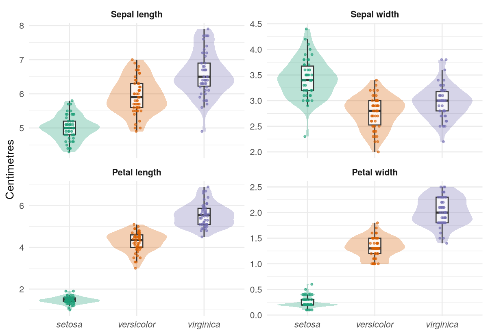
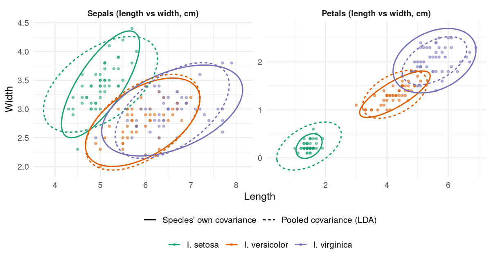
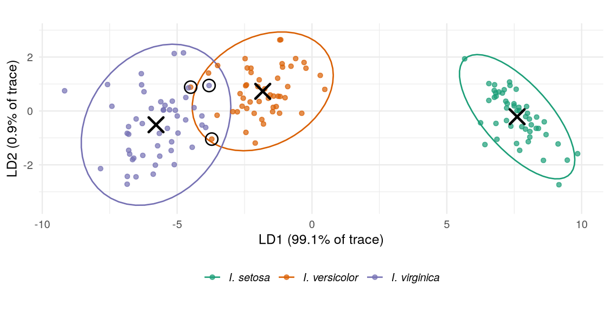
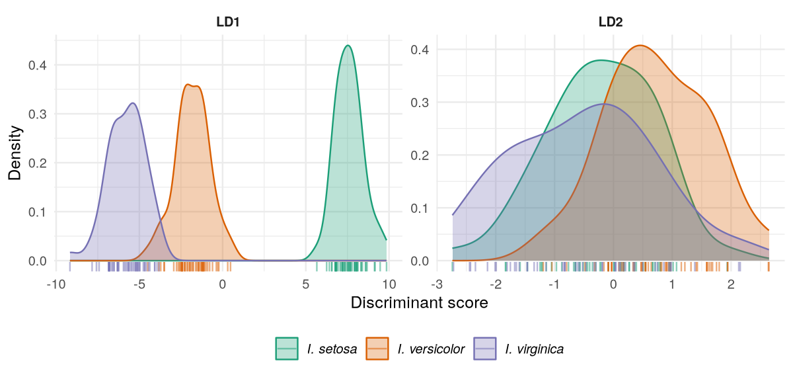
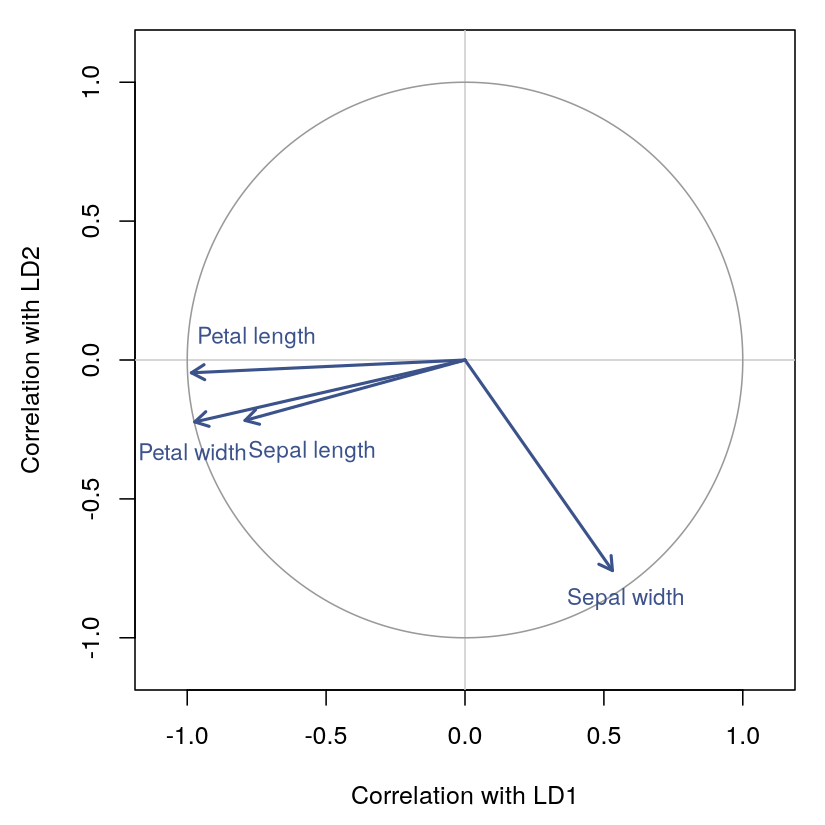
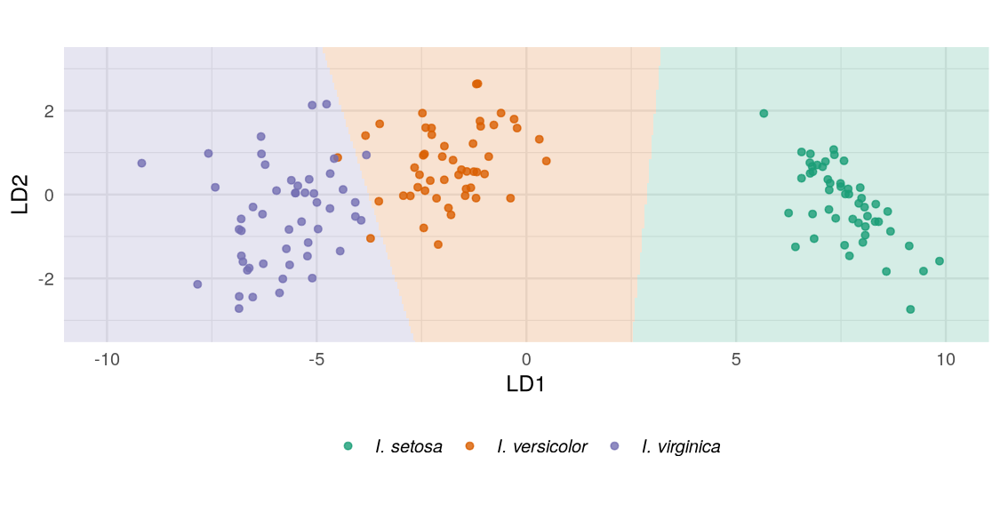
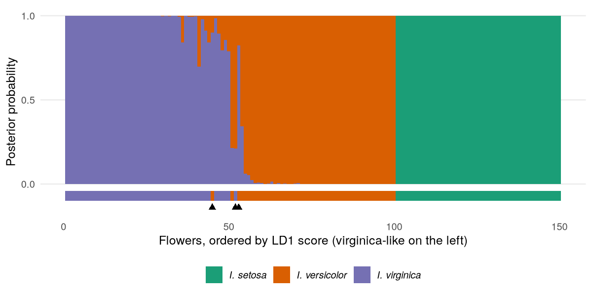
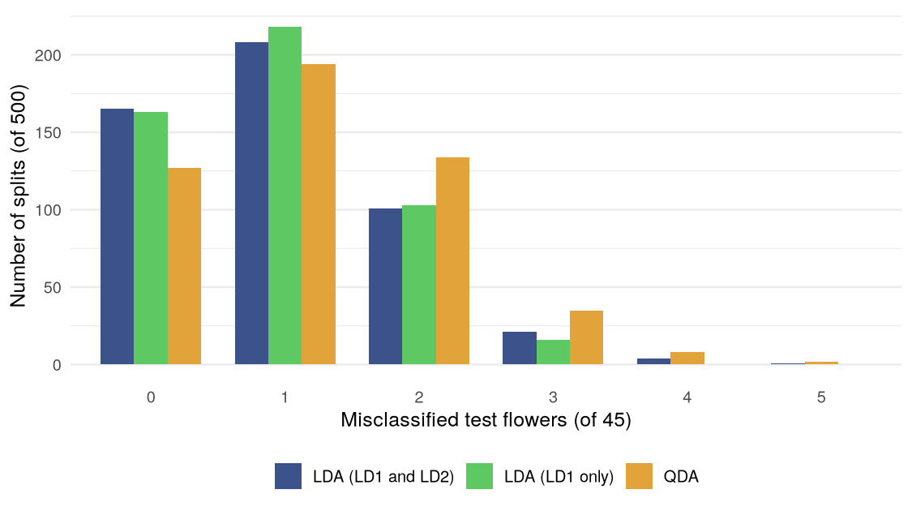

Abstract
In 1936 the statistician and geneticist Ronald Fisher used 150 iris flowers, measured by the botanist Edgar Anderson, to introduce the linear discriminant: the weighted sum of measurements that best separates known groups. The data hold 50 flowers from each of three species, Iris setosa, Iris versicolor and Iris virginica, with four measurements per flower: sepal length, sepal width, petal length and petal width. We repeat his analysis in R.
A multivariate analysis of variance confirms that the species differ (Wilks' \(\Lambda = 0.023\)). The first linear discriminant, a contrast of petal size against sepal width, carries 99.1% of the between-species separation, with a canonical correlation of 0.985. It separates I. setosa from the other two species completely. Using both discriminants, the classifier misclassifies 3 of 150 flowers under leave-one-out cross-validation, an error rate of 2.0%. All three errors involve I. versicolor and I. virginica. Repeated 70/30 train-test splits give a mean test error of 2.2%. Box's M test rejects equal species covariance matrices, yet quadratic discriminant analysis, which does not assume them, does no better: its leave-one-out error is 2.7%.
The iris data are among the best-known datasets in statistics and machine learning. They were collected by the botanist Edgar Anderson, who was studying variation among irises in their natural populations (Anderson, 1935). Two of the three species were gathered on the Gaspé Peninsula in Quebec, from the same pasture, on the same day. Ronald Fisher used them in the paper that introduced the linear discriminant (Fisher, 1936). Fisher's question was one that taxonomists face all the time. Given several measurements on a specimen, how should they be combined into one number that best tells the groups apart? His answer, a weighted sum whose weights are chosen to maximise the separation between groups relative to the scatter within them, is still the starting point for classification methods today.
Each of the 150 flowers has four measurements, in centimetres: the length and
width of a sepal and the length and width of a petal. Fifty flowers come from
each of the three species pictured in Table 1. The data ship with R as
datasets::iris. That copy agrees with the values Fisher published, whereas
some copies circulating online contain transcription errors (Bezdek et al., 1999).
| Iris versicolor | Iris setosa | Iris virginica |
This report is a complete linear discriminant analysis (LDA) of the data. The
Methods section develops the technique: Fisher's criterion, the probabilistic
model behind it, the assumptions it makes, and the quantities used to interpret
and evaluate a fitted discriminant. The Analysis section applies each step in R.
It tests whether the species differ at all, checks the assumptions, fits and
interprets the discriminant functions, and measures how well they classify
flowers they were not fitted to. Every table and figure is computed by R code
kept in the report's source, iris_r.mepml, where each block reruns on its own
(C-c C-c in mep, or <leader>ka to run them all). The exported report shows
what the code computes, not the code itself.
Table 2 describes the five columns of the data. None has missing values, and
the design is balanced: 50 flowers of each species. The tables in this report
are printed by R itself, with knitr::kable(), as Markdown that mep reads as a
table (results=markdown), so they are recomputed whenever the report is run
again.
| Column | Kind | Values | Missing |
|---|---|---|---|
Sepal.Length | measurement (cm) | 4.3 to 7.9 | 0 |
Sepal.Width | measurement (cm) | 2.0 to 4.4 | 0 |
Petal.Length | measurement (cm) | 1.0 to 6.9 | 0 |
Petal.Width | measurement (cm) | 0.1 to 2.5 | 0 |
Species | species (factor) | setosa (50), versicolor (50), virginica (50) | 0 |
Table 3 shows the first six flowers as R stores them, one row per flower.
| Sepal length | Sepal width | Petal length | Petal width | Species |
|---|---|---|---|---|
| 5.1 | 3.5 | 1.4 | 0.2 | setosa |
| 4.9 | 3.0 | 1.4 | 0.2 | setosa |
| 4.7 | 3.2 | 1.3 | 0.2 | setosa |
| 4.6 | 3.1 | 1.5 | 0.2 | setosa |
| 5.0 | 3.6 | 1.4 | 0.2 | setosa |
| 5.4 | 3.9 | 1.7 | 0.4 | setosa |
Table 4 summarises each measurement by species. The species differ most in their petals. Setosa petals average 1.46 cm long, against 4.26 cm for versicolor and 5.55 cm for virginica. Setosa has the widest sepals and the shortest petals, the reverse of the other two species. Virginica is larger than versicolor on all four measurements, but by much less than either differs from setosa.
| Species | Sepal length | Sepal width | Petal length | Petal width |
|---|---|---|---|---|
| I. setosa | 5.01 (0.35) | 3.43 (0.38) | 1.46 (0.17) | 0.25 (0.11) |
| I. versicolor | 5.94 (0.52) | 2.77 (0.31) | 4.26 (0.47) | 1.33 (0.20) |
| I. virginica | 6.59 (0.64) | 2.97 (0.32) | 5.55 (0.55) | 2.03 (0.27) |
Figure 1 plots every pair of measurements. Setosa forms its own cluster in every panel that involves a petal measurement. Versicolor and virginica overlap in every panel, though least in the petal panels, where virginica sits up and to the right. The measurements are also strongly correlated within species: a longer sepal tends to go with a wider one, and a longer petal with a wider one. This is why LDA helps. A weighted combination can separate groups that overlap on each measurement taken alone.
Figure 2 shows each measurement's distribution by species. The petal measurements separate setosa from the others completely. They also separate versicolor from virginica better than the sepal measurements do, although the two still overlap. The spread differs between species too, especially in the petals, where setosa varies least. This matters for the equal-covariance assumption tested below.

Suppose \(n\) observations \(\mathbf{x}_i \in \mathbb{R}^p\) fall into \(K\) known groups, with \(n_k\) observations in group \(k\), group means \(\bar{\mathbf{x}}_k\) and overall mean \(\bar{\mathbf{x}}\). The total scatter of the data splits into the scatter within groups and the scatter between them. The within-groups and between-groups sums of squares and cross-products (SSCP) matrices are
Fisher (1936) looked for the linear combination \(z = \mathbf{a}^\top \mathbf{x}\) whose group means are as far apart as possible relative to the spread within groups. That is, he maximised the ratio
Setting the derivative of \(J\) to zero gives the generalised eigenproblem
so the best direction \(\mathbf{a}_1\) is the eigenvector of \(\mathbf{W}^{-1}\mathbf{B}\) with the largest eigenvalue \(\lambda_1\), and \(J(\mathbf{a}_1) = \lambda_1\). The eigenvectors that follow give further discriminant functions. Each maximises \(J\) among directions whose scores are uncorrelated within groups with the scores of the earlier functions. \(\mathbf{B}\) has rank at most \(K - 1\), so there are \(s = \min(K - 1, p)\) functions with non-zero eigenvalues. For the iris data, \(K = 3\) and \(p = 4\), so the four measurements reduce to two discriminant functions, LD1 and LD2, without losing any information that separates the groups.
An eigenvector's length is arbitrary. R's MASS::lda (Venables and Ripley, 2002)
scales the functions so that each has unit variance within groups, which
makes the discriminant space Euclidean: distances there are Mahalanobis
distances in the original measurements. The sign of each function is also
arbitrary, so software may flip it.
The same functions come out of a probability model. Suppose that within group \(k\) the measurements are multivariate normal, with a mean of their own and a covariance matrix \(\boldsymbol{\Sigma}\) shared by all groups,
and that group \(k\) has prior probability \(\pi_k\). Bayes' theorem gives the posterior probability that an observation belongs to group \(k\),
where \(f_k\) is the normal density. Because \(\boldsymbol{\Sigma}\) is the same for every group, the quadratic terms in \(\mathbf{x}\) cancel when groups are compared. What remains is a linear discriminant score
and the Bayes rule assigns \(\mathbf{x}\) to the group with the largest \(\delta_k(\mathbf{x})\). The boundary between two groups, where their scores are equal, is therefore a hyperplane (Hastie et al., 2009). In practice the group means are estimated by the sample means, and \(\boldsymbol{\Sigma}\) by the pooled within-groups covariance \(\hat{\boldsymbol{\Sigma}} = \mathbf{W} / (n - K)\).
The two views agree. When the rule uses all \(s\) discriminant functions, it is the same as assigning each observation to the nearest group centroid in the discriminant space, adjusted for the priors:
where \(\mathbf{z}\) holds the observation's discriminant scores and \(\bar{\mathbf{z}}_k\) the centroid of group \(k\). Here the priors are the group proportions, all equal to 1/3, so the rule reduces to the nearest centroid.
The probability model assumes that:
Fisher's criterion itself needs none of the distributional assumptions: it is a geometric definition of a good projection. The assumptions matter for the posterior probabilities, which are only calibrated if the model holds, and for whether the Bayes rule is actually optimal. The rule usually classifies well even when the assumptions are moderately violated.
Normality within groups can be checked one variable at a time with the Shapiro-Wilk test. Equality of the covariance matrices is tested with Box's M test (Box, 1949). With \(\mathbf{S}_k\) the covariance matrix of group \(k\) and \(\mathbf{S}_p = \mathbf{W}/(n - K)\) the pooled one, the statistic is
\(M\) is zero when all the \(\mathbf{S}_k\) are equal and grows as they diverge. After a small-sample correction, \(M\) is approximately \(\chi^2\) with \(p(p+1)(K-1)/2\) degrees of freedom. The test is known to be very sensitive, both to departures from normality and to differences in covariance too small to matter for classification. For that reason we treat it as a diagnostic, and compare LDA with quadratic discriminant analysis (QDA), which estimates a separate covariance matrix for each group and does not need the assumption.
A fitted discriminant is described by several quantities:
The error rate on the data used to fit the model (the resubstitution or apparent error) is optimistic, because the model has been tuned to exactly those flowers. We therefore also estimate the error in two honest ways:
MASS::lda(..., CV = TRUE) does this without refitting the model 150 times.All computations use R 4.6.1 (Team, 2026). The discriminant and QDA come
from the MASS package (Venables and Ripley, 2002), most figures are drawn with
ggplot2 (Wickham, 2016), and the tables are printed as Markdown by
knitr::kable() (Xie, 2015). Box's M test is computed directly from its
definition above. R has no built-in function for it, and implementing it here
keeps the report free of extra dependencies.
Classifying the flowers only makes sense if the species differ in their measurements. A one-way multivariate analysis of variance (MANOVA) tests the hypothesis that the three species have the same mean vector.
All four standard MANOVA statistics reject equal means overwhelmingly (Table 5). Wilks' \(\Lambda = 0.023\) means that only 2.3% of the generalised variance in the measurements is left unexplained by species.
| Statistic | Value | Approx. F | df1 | df2 | p-value |
|---|---|---|---|---|---|
| Wilks' \(\Lambda\) | 0.0234 | 199.1 | 8 | 288 | \(1.4 \times 10^{-112}\) |
| Pillai's trace | 1.1919 | 53.5 | 8 | 290 | \(9.7 \times 10^{-53}\) |
| Hotelling-Lawley trace | 32.4773 | 580.5 | 8 | 286 | \(6.4 \times 10^{-172}\) |
| Roy's largest root | 32.1919 | 1167.0 | 4 | 145 | \(3.8 \times 10^{-109}\) |
The flowers were measured separately, so we take them to be independent, and none of the measurements is a linear combination of the others. That leaves normality and equal covariances, which we check with a Shapiro-Wilk test on each measurement within each species and with Box's M test.
Table 6 lists the Shapiro-Wilk p-values. Eleven of the twelve distributions look compatible with normality at the 1% level. Setosa's petal width does not (\(p < 0.001\)). Its values are recorded to the nearest millimetre and 29 of the 50 are exactly 0.2 cm, so the distribution is lumpy and skewed to the right. The same coarse recording shows as rows of overlapping points in Figure 1. Versicolor's petal width is borderline (\(p = 0.027\)). Neither departure is serious for classification. The one clear failure is in setosa, a species separated from the others by a gap far larger than the width of its distribution.
| Measurement | I. setosa | I. versicolor | I. virginica |
|---|---|---|---|
| Sepal length | 0.460 | 0.465 | 0.258 |
| Sepal width | 0.272 | 0.338 | 0.181 |
| Petal length | 0.055 | 0.158 | 0.110 |
| Petal width | < 0.001 | 0.027 | 0.087 |
Equal covariances are clearly rejected (Table 7). The log-determinant of a covariance matrix measures the volume of the cloud of points. Setosa's is about 4.1 lower than virginica's, a factor of \(e^{4.1} \approx 60\) in generalised variance: virginica's flowers vary much more than setosa's.
| Quantity | Value |
|---|---|
| \(\log \det \mathbf{S}_k\), I. setosa | -13.07 |
| \(\log \det \mathbf{S}_k\), I. versicolor | -10.87 |
| \(\log \det \mathbf{S}_k\), I. virginica | -8.93 |
| \(\log \det \mathbf{S}_p\), pooled | -9.96 |
| Box's \(M\) | 146.66 |
| \(\chi^2\) (corrected) | 140.94 |
| Degrees of freedom | 20 |
| p-value | \(3.4 \times 10^{-20}\) |
Figure 3 shows what the test detects. For each species it draws the 95% ellipse of its own covariance matrix (solid) and of the pooled covariance matrix that LDA assumes (dashed), centred on that species' mean. For the petals the difference is large. Setosa's actual ellipse is much smaller than the pooled one, and virginica's is larger. For the sepals, versicolor's and virginica's ellipses are close to the pooled one, but setosa's is narrower and steeper, because its sepal length and width are more strongly correlated (0.74, against 0.53 and 0.46 in the other species). The pooled matrix is a compromise, and the question for the Validation section is whether the compromise costs any accuracy.

The model uses all four measurements, with priors equal to the species proportions (1/3 each).
Both discriminant functions are statistically significant (Table 8). They are not equally important. LD1 has an eigenvalue of 32.2: along it, the spread between species is 32 times the spread within them, and it carries 99.1% of the separation. LD2 carries the remaining 0.9%. Its canonical correlation of 0.47 means it does separate the species, but only weakly. With 150 flowers even that small effect is highly significant (\(p = 5.8 \times 10^{-8}\)).
| Function | Eigenvalue | % of trace | Canonical corr. | Wilks' \(\Lambda\) | \(\chi^2\) | df | p-value |
|---|---|---|---|---|---|---|---|
| LD1 | 32.192 | 99.12 | 0.985 | 0.0234 | 546.12 | 8 | \(8.9 \times 10^{-113}\) |
| LD2 | 0.285 | 0.88 | 0.471 | 0.7780 | 36.53 | 3 | \(5.8 \times 10^{-8}\) |
Table 9 gives the coefficients. The raw coefficients are what predict() uses.
Up to centring, an iris's LD1 score is
\(0.83\,\mathrm{SL} + 1.53\,\mathrm{SW} - 2.20\,\mathrm{PL} - 2.81\,\mathrm{PW}\)
(sepal length, sepal width, petal length, petal width). The standardised
coefficients put the four measurements on a common scale. By them, LD1 is
dominated by petal length (\(-0.95\)), with contributions from petal width
(\(-0.58\)), sepal width (\(+0.52\)) and sepal length (\(+0.43\)). LD2 is mainly
sepal width and petal width, both negative (\(-0.74\) and \(-0.58\)), against
petal length (\(+0.40\)).
| Measurement | LD1 (raw) | LD2 (raw) | LD1 (std.) | LD2 (std.) |
|---|---|---|---|---|
| Sepal length | 0.829 | -0.024 | 0.427 | -0.012 |
| Sepal width | 1.534 | -2.165 | 0.521 | -0.735 |
| Petal length | -2.201 | 0.932 | -0.947 | 0.401 |
| Petal width | -2.810 | -2.839 | -0.575 | -0.581 |
Sepal length has a positive LD1 coefficient even though virginica, with the lowest LD1 scores, has the longest sepals. The structure correlations in Table 10 explain this. Across the whole sample, sepal length correlates at \(-0.79\) with LD1, in the same direction as the petal measurements, because large flowers are large in every dimension. The positive coefficient is a correction: once petal size is known, a longer sepal than expected points towards setosa. This is a standard reason for reading structure correlations alongside coefficients rather than instead of them. Taken together, the correlations say that LD1 is essentially a petal-size axis. Over the whole sample, petal length and petal width correlate \(-0.99\) and \(-0.97\) with it. LD2 is essentially a sepal-width axis (\(-0.86\) within species). The signs are arbitrary, as noted in the Methods. With these signs, setosa scores high on LD1.
| Measurement | LD1 (within) | LD2 (within) | LD1 (total) | LD2 (total) |
|---|---|---|---|---|
| Sepal length | -0.223 | -0.311 | -0.792 | -0.218 |
| Sepal width | 0.119 | -0.864 | 0.531 | -0.758 |
| Petal length | -0.706 | -0.168 | -0.985 | -0.046 |
| Petal width | -0.633 | -0.737 | -0.973 | -0.223 |
The species centroids in the discriminant space are in Table 11. On LD1 they are widely spaced and in order: setosa at \(+7.6\), versicolor at \(-1.8\) and virginica at \(-5.8\). The scores have unit variance within species, so on LD1 alone setosa is 9.4 within-species standard deviations from versicolor, while versicolor and virginica are 4.0 apart. On LD2, versicolor is the odd one out, at \(+0.73\) against about \(-0.2\) to \(-0.5\) for the others.
| Species | LD1 | LD2 |
|---|---|---|
| I. setosa | 7.608 | -0.215 |
| I. versicolor | -1.825 | 0.728 |
| I. virginica | -5.783 | -0.513 |
Figure 4 plots every flower's scores on the two discriminant functions. It is the best two-dimensional view of the separation between species: no other linear projection of the four measurements separates them more by Fisher's criterion. Setosa lies far to the right, alone. Versicolor and virginica lie next to each other along LD1, and their 95% ellipses overlap in a narrow band between them. The three flowers that the fitted rule misclassifies (circled) all sit in that band.

Figure 5 shows the same scores one function at a time. On LD1 the setosa density does not touch the others. The versicolor and virginica densities overlap only in their tails. On LD2 all three densities overlap heavily. LD2 does shift versicolor upward, which is why it helps a little with the versicolor-virginica boundary, but on its own it could not classify anything.

Figure 6 draws each measurement as an arrow from the origin to its total-sample structure correlations with the two functions. The petal arrows point almost straight along LD1, which is what makes LD1 a petal-size axis. Sepal width points mostly along LD2. Sepal length lies between the two but closer to LD1. Arrows near the unit circle are almost entirely explained by the two functions.

The classification rule divides the discriminant plane into three regions, one
per species (Figure 7). The priors are equal and the scores have unit variance
within species, so each point belongs to the region of its nearest centroid, and
the boundaries are the perpendicular bisectors between centroids. The regions
shown are therefore exactly the rule predict() applies to the four
measurements. The versicolor-virginica boundary crosses the LD1 axis near
\(-3.8\). It is tilted about 17 degrees from vertical by the two species'
separation on LD2.

The discriminant classifies 147 of the 150 flowers correctly (Table 12). Leave-one-out cross-validation gives exactly the same result as resubstitution: the same three flowers are misclassified, and no others (Table 13 gives both classifications). Refitting without a flower moves the coefficients too little to change any other flower's class. The estimated error rate is therefore 2.0%, and it is not an artefact of testing on the training data. Every setosa is classified correctly. The errors are two versicolor taken for virginica and one virginica taken for versicolor.
| Actual species | Predicted setosa | Predicted versicolor | Predicted virginica | Correct |
|---|---|---|---|---|
| I. setosa | 50 | 0 | 0 | 100% |
| I. versicolor | 0 | 48 | 2 | 96% |
| I. virginica | 0 | 1 | 49 | 98% |
| Total | 50 | 49 | 51 | 98% |
The three misclassified flowers are borderline (Table 13). Each is a large versicolor or a small virginica. Flowers 71 and 84 are versicolor with petals 4.8 and 5.1 cm long, well inside virginica's range (4.5 to 6.9 cm). Flower 71 also has the widest petals of any versicolor (1.8 cm). Flower 134 is a virginica with petals only 1.5 cm wide, close to the narrowest of its species. None is misclassified with much confidence: flower 134's posterior probability of versicolor is 0.79, and the other two go to virginica with probability 0.82 and 0.90.
| Flower | Sepal L. | Sepal W. | Petal L. | Petal W. | Species | Predicted | Resubst. | P(versicolor) | P(virginica) |
|---|---|---|---|---|---|---|---|---|---|
| 71 | 5.9 | 3.2 | 4.8 | 1.8 | versicolor | virginica | virginica | 0.177 | 0.823 |
| 84 | 6.0 | 2.7 | 5.1 | 1.6 | versicolor | virginica | virginica | 0.099 | 0.901 |
| 134 | 6.3 | 2.8 | 5.1 | 1.5 | virginica | versicolor | versicolor | 0.788 | 0.212 |
Figure 8 shows the posterior probabilities for every flower, ordered by LD1 score. Setosa's posteriors, on the right, are all essentially 1. Between virginica on the left and versicolor, the posterior passes from one species to the other within a narrow band of flowers. These are the only flowers the model is uncertain about: just 11 of the 150 have a largest posterior below 0.9. The uncertainty the model reports matches the errors it actually makes.

Leave-one-out gives a single estimate of the error rate. Repeated hold-out shows how much that estimate varies with the particular flowers used for fitting. We fit three rules to each of 500 stratified random training sets of 105 flowers (35 per species) and counts their mistakes on the remaining 45. The three rules are LDA with both discriminant functions, LDA with LD1 alone, and QDA, which drops the equal-covariance assumption that Box's M test rejected.

The hold-out results agree with leave-one-out (Figure 9, Table 14). LDA's test error averages 2.2%. A third of the splits give no errors at all, and only 5 of the 500 give more than three. The variation between splits, a standard deviation of 2.0 percentage points, is as large as the error rate itself. A single train-test split of the iris data can therefore report anything from perfect classification to 11% error, which is why repeated resampling or leave-one-out is needed.
| Rule | Resubstitution | Leave-one-out | Hold-out mean (SD) | Error-free splits | Splits with > 3 errors |
|---|---|---|---|---|---|
| LDA, LD1 and LD2 | 2.00% | 2.00% | 2.20% (1.99) | 33% | 5 |
| LDA, LD1 only | 1.33% | 2.00% | 2.10% (1.80) | 33% | 0 |
| QDA | 2.00% | 2.67% | 2.71% (2.18) | 25% | 10 |
Two further points emerge from the comparison. First, the rule that uses LD1 alone does as well as the one that uses both functions. On the training data it does slightly better. LD2 carries under 1% of the separation, and its small contribution is not enough to improve prediction for new flowers. Second, QDA does slightly worse than LDA even though LDA's covariance assumption is clearly false. QDA estimates three 4-by-4 covariance matrices, 30 parameters, from 35 to 50 flowers per species, and the extra variance of those estimates outweighs the bias that pooling introduces. This is the usual result for small samples (Hastie et al., 2009). A significant Box's M test is not by itself a reason to abandon LDA. The question is whether a more flexible model predicts better, and for these data it does not.
Fisher's linear discriminant reduces the four iris measurements to a single score that separates the three species almost perfectly. That score, LD1, carries 99.1% of the between-species separation and is essentially a contrast of petal size against sepal width. It places I. setosa about 9 within-species standard deviations from the other two species, far enough that no setosa is ever misclassified. I. versicolor and I. virginica are separated too, but they overlap slightly, and all of the errors come from that overlap. Using the fitted rule on flowers it was not fitted to, three flowers in 150 are misclassified (2.0% under leave-one-out, 2.2% averaged over 500 random splits), and the posterior probabilities flag exactly those flowers as uncertain.
The model's assumptions do not hold exactly. The species' covariance matrices differ significantly (Box's M, \(p = 3.4 \times 10^{-20}\)), and setosa's petal widths are not normal. Neither problem harms classification. QDA, which does not assume equal covariances, does slightly worse, and the non-normal variable belongs to the species that is easiest to separate. The posterior probabilities should still be read as a guide rather than as calibrated probabilities.
Three caveats apply. The data are small and famously easy, so these error rates say little about harder problems. The flowers came from a few natural populations, so the discriminant may not transfer to irises from elsewhere. And the three species are equally common here by design, which the equal priors reflect. In a population where one species is rarer, the priors, and with them the boundaries, should change.